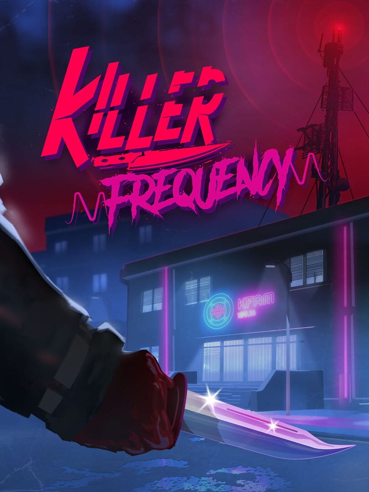

Killer Frequency
Killer Frequency
Details
|  | |
| Playtime | 6h 7m 0s |
| Last Activity | 2023-07-07 22:51:16 |
| Added | 2023-08-11 0:29:07 |
| Modified | 2025-10-02 9:33:57 |
| Completion Status | Completed |
| Library | Steam |
| Source | Steam |
| Platform | PC (Windows) |
| Release Date | 2023-06-01 |
| Community Score | 72 |
| Critic Score | 82 |
| User Score | |
| Genre | Adventure Indie Puzzle Simulator |
| Developer | Team17 |
| Publisher | Team17 |
| Feature | Single Player |
| Links | Steam Official Website Twitch Epic Xbox Playstation Nintendo Meta |
| Tag | 1980s Adventure America Atmospheric Choices Matter Comedy Dark Comedy Emotional Exploration First-Person Funny Horror Interactive Fiction Investigation Multiple Endings Puzzle Simulation Singleplayer Story Rich Walking Simulator |
Description
The year is 1987, and as the clock strikes midnight in small-town Gallows Creek, USA, former big city radio DJ Forrest Nash is live on air in what will turn out to be the graveyard shift of a lifetime...
In this horror comedy, you must solve puzzles to save callers from being hunted down by a mysterious killer. Where every call is life and death, can you save the inhabitants of Gallows Creek?


In this horror comedy, you must solve puzzles to save callers from being hunted down by a mysterious killer. Where every call is life and death, can you save the inhabitants of Gallows Creek?
Unique 1st person narrative:
Step into the shoes of a late-night radio talk-show host – new in town and fallen from grace. The Police Chief is dead… so the townsfolk turn to you for help, as apparently you, Forest Nash are the only person in town who can run a phone line.Real-time decisions and puzzle solving:
Use branching dialogues to interact with a variety of eccentric small-town personalities including potential victims and suspects. Explore your surroundings, gather clues, make decisions, solve satisfying riddles, and try to help each of your callers survive the night.Retro Slasher setting:
Jump back in time to 1987 with this slasher inspired puzzler – explore an authentically detailed radio station and interact with dozens of physics-based objects straight from a bygone era, including a working cassette and record player. With a fully voiced cast and a killer original soundtrack of 80's inspired tunes from rock classics to synthwave!